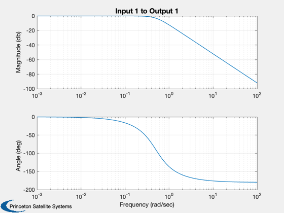
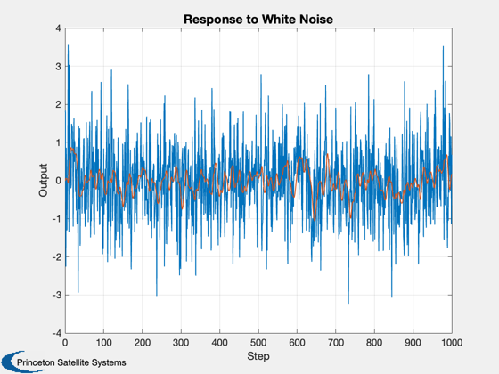

Designs noise filters and simulates them to show how they attenuate white noise.
Prints the output matrices to a text file in CommonData. ------------------------------------------------------------------------ See also CButter, StatePrp, Plot2D, WriteCM ------------------------------------------------------------------------
Contents
%-------------------------------------------------------------------------- % Copyright 1994 Princeton Satellite Systems, Inc. % All rights reserved. %-------------------------------------------------------------------------- % Since version 1. %--------------------------------------------------------------------------
Simulation parameters
%----------------------------
nSim = 1000;
Filter parameters
%---------------------------- tSamp = 0.5; wCutoff = 0.5; nOrder = 2; % We have our lowest flex frequency at 0.3 Hz or 1.885 rad/sec % Our control system bandwidth is 0.15 rad/sec % So we want our cutoff to be 1 rad/sec % The half sample frequency is 12.57 rad/sec so this is achievable % The magnitude should be flat in the pass band
Call like this to get a plot
%-----------------------------
CButter(nOrder,wCutoff);
 Get the discrete time equations
%-------------------------------- [a,b,c,d] = CButter(nOrder,wCutoff,tSamp,'Delta');
Write in C format
%------------------ p = FindDirectory( 'CommonData' ); fID = fopen(fullfile(p,'YawFilterMatrices.txt'),'w'); WriteCM(fID,'A Matrix','fYawAMatrix',reshape(a',1,length(a)^2),12,20,nOrder) WriteCM(fID,'B Matrix','fYawBMatrix',b,12,20,nOrder) WriteCM(fID,'C Matrix','fYawCMatrix',c,12,20,nOrder) WriteCM(fID,'D Matrix','fYawDMatrix',d,12,20,nOrder) fclose(fID); x = zeros(length(a),1); yPlot = zeros(1,nSim); u = randn(1,nSim); for k = 1:nSim [yPlot(k),x] = StatePrp(a,b,c,d,x,u(k),'Delta'); end fprintf('Filter Order = %12i \n',nOrder); fprintf('Filter Cutoff = %12.8f rad/sec\n',wCutoff); fprintf('Sampling Period = %12.8f sec \n',tSamp); fprintf('Mean = %12.8f \n',mean(yPlot)); fprintf('Attenuation = %12.8f \n', std(yPlot)/std(u)); Plot2D(1:nSim,[u;yPlot],'Step','Output','Response to White Noise'); %-------------------------------------- % $Date$ % $Id: 6ca231ded9b2755736d54c2d5f7a70c8219445f5 $
Filter Order = 2 Filter Cutoff = 0.50000000 rad/sec Sampling Period = 0.50000000 sec Mean = -0.03403516 Attenuation = 0.30494638